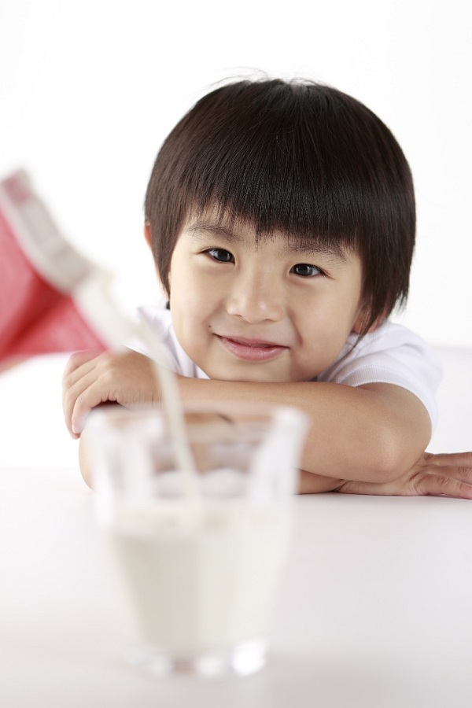

GIẢI ĐÁP NHỮNG THẮC MẮC MÀ CÁC MẸ THƯỜNG GẶP KHI SỬ DỤNG SỮA BỘT CHO BÉ
1. Bé vừa chuyển qua uống sữa Optimum Gold được 2 ngày thì bị tiêu chảy, tôi có nên ngưng không cho con uống nữa và đổi sữa khác không? Nguyên nhân nào bé bị tiêu chảy?
Bé nhà bạn bị tiêu chảy có thể xuất phát từ nhiều nguyên nhân khác nhau như bé bị dị ứng với thực phẩm (sữa, bột, cháo…), cơ thể bé bị nhiễm khuẩn, bé đang trong giai đoạn mọc răng… Nên nếu trường hợp bé nhà bạn bị tiêu chảy sau khi uống sữa cũng có thể đây là một sự trùng hợp ngẫu nhiên nào đó hoặc cũng có thể bé bị dị ứng hoặc chưa kịp thích nghi với sữa mới.. Nếu như bố mẹ quan sát thấy bé có những dấu hiệu khác thường đi kèm như người bứt rứt, ngứa ngáy, khó ngủ, khó chịu, sốt… thì tốt nhất bố mẹ nên đưa bé đến bác sĩ để được kiểm tra. Có thể đó là một trong số những dấu hiệu của một bệnh lý tiềm ẩn nào đó. Bên cạnh đó, bố mẹ nên vệ sinh sạch sẽ những vật dụng cá nhân của bé như: khăn, chăn màn, bình ly, chén, bình sữa,… vì có thể bé nhà bạn đang bị nhiễm khuẩn
2. Có nên để sữa bé uống thừa hoặc đã pha nhưng bé chưa uống vào tủ lạnh để uống sau không?
Vì sữa bột cho bé là thực phẩm có chứa nhiều dưỡng chất cho nên chúng rất dễ bị nhiễm khuẩn. Tốt nhất bố mẹ chỉ nên pha sữa với liều lượng vừa phải, đúng với sức uống của con, không nên pha quá nhiều. Nếu bé nhà bạn uống một lượng ít thì nên chịu khó pha nhiều lần, đảm bảo lượng sữa cần thiết cho con trong một ngày, không nên pha dư rồi để con uống lại sữa cũ.

3. Bé uống sữa Optimum Gold mỗi ngày, uống sữa nhiều, ăn cũng nhiều nhưng vẫn không thấy lên ký, như vậy có phải là sữa không hợp nên
bé chậm lên cân không? Có cần phải thay sữa không?Để bé cưng của bạn phát triển một cách toàn diện, khỏe mạnh bố mẹ phải hiểu về nhu cầu cần thiết của con mình. Thực đơn tốt nhất là 3 bữa cơm chính đa dạng đủ các nhóm thực phẩm cơ bản, kết hợp bữa phụ là sữa. Bố mẹ xem lại chế độ dinh dưỡng cho con mình đã khoa học hay chưa? Nếu bé chỉ uống sữa 3 bữa chính mà bé lại không ăn uống đầy đủ chất dinh dưỡng thì cũng ảnh hưởng đến sức khỏe và sự tăng trưởng của bé. Vì sữa bột cho bé là thực phẩm bổ sung, không thể thay thế được bữa ăn chính.
Hy vọng những giải đáp trên đây có thể khiến mẹ hài lòng. Với tình hình sữa bột hiện tại, tốt nhất, mẹ chỉ nên mua sữa bột cho bé thuộc sản phẩm của những thương hiệu lớn tại các cửa hàng, siêu thị uy tín, tránh mua hàng xách tay, hàng giả nhái sẽ làm ảnh hưởng đến sức khỏe của bé, mẹ nhé!
Những thắc mắc của mẹ
Địa chỉ Email: